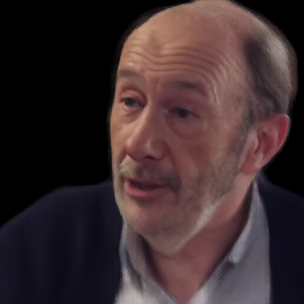
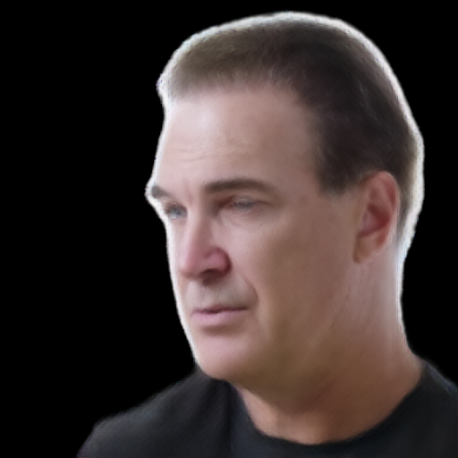
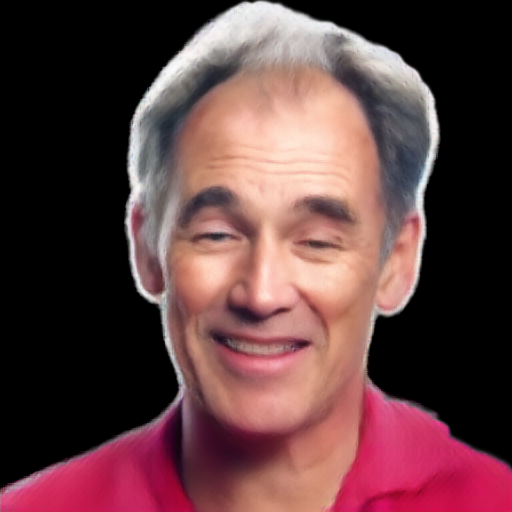

Learn deformable geometry
Source-dependent layered offsets extend a FLAME-guided head and a shoulder–neck carrier. Template and volumetric skinning provide their motion correspondence.
ONE IMAGE. DEFORMABLE GEOMETRY. ALIGNED APPEARANCE.
1 Peking University 2 Pengcheng Laboratory
* Equal contribution
Recover geometry first. Align image evidence to it.
Build a canonical avatar once and reuse it across target frames.

 Input
Input
 Input
Input
 Input
Input
 Input
InputSingle-image self-reenactment on VFHQ. Source portraits are shown in the insets.
ABSTRACT
Building an animatable 3D Gaussian head avatar from a single image requires stable three-dimensional structure, detailed appearance and motion compatible with a parametric face model. Under image-based supervision, jointly predicting Gaussian geometry and appearance can introduce ambiguity, particularly beyond the facial template, where reliable correspondences are needed for appearance recovery and animation.
We present HSAVATAR, a two-stage framework that recovers deformable geometry before predicting appearance. Stage I learns layered canonical Gaussian positions beyond the facial template and establishes parametric motion correspondence. Stage II fixes these positions and combines geometric projection with depth-derived visibility to align and aggregate multi-scale image evidence in canonical space. An attribute decoder predicts the remaining Gaussian attributes on this fixed spatial reference. The canonical avatar is constructed once per source and reused across target frames through parametric deformation and Gaussian rendering. Experiments on VFHQ demonstrate effective single-image self-reenactment.
01 / RESULTS
Self-reenactment and cross-identity driving.
Choose an identity and a comparison method.


Source 020043 · Frame 0 · Target frame 35
View comparison with all methods ↗
Each avatar uses source frame 0. Self-reenactment uses a target frame of the same identity as the driving reference and ground truth. Cross-reenactment transfers motion from a different identity.
Comparisons use the same source and driving frames across methods. Images retain each method's native preprocessing and use MODNet foreground compositing for display.
02 / METHOD
Source-adaptive off-surface geometry
meets depth-guided multi-scale features.

Source-dependent layered offsets extend a FLAME-guided head and a shoulder–neck carrier. Template and volumetric skinning provide their motion correspondence.
Fix the learned positions. Combine geometric projection, depth confidence and multi-scale image features to predict the remaining Gaussian attributes.
Apply target expression and pose, render the deformed Gaussians, then refine the image with the post renderer.
Method figure from the current manuscript. Blue and yellow trace geometry and appearance. Feature thumbnails use per-tensor PCA colors.
03 / EVALUATION
Full-model results on 2,500 pairs.
Image quality, identity and motion.
| Metric | HSAVATAR |
|---|---|
| PSNR ↑ | 20.86 |
| SSIM ↑ | 0.797 |
| LPIPS ↓ | 0.178 |
| CSIM ↑ | 0.736 |
| AED ↓ | 0.134 |
| APD ↓ | 0.015 |
| AKD ↓ | 4.903 |
50 VFHQ-Test videos × 50 target frames, with frame 0 as source and SqueezeNet LPIPS.
One RTX 4090, batch size 1, 20 measured outputs after 3 warm-ups. Includes the model, Gaussian renderer and post renderer with preloaded tensors; excludes I/O and preprocessing.